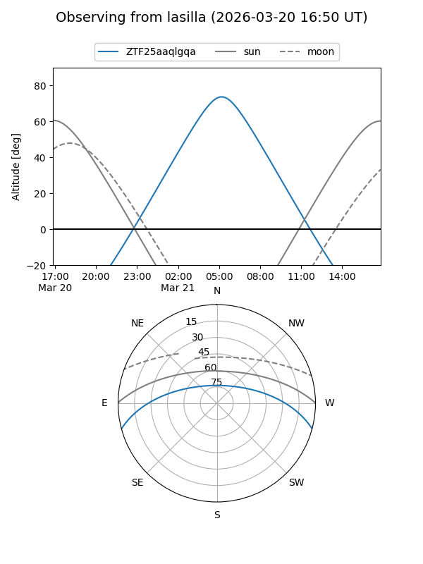
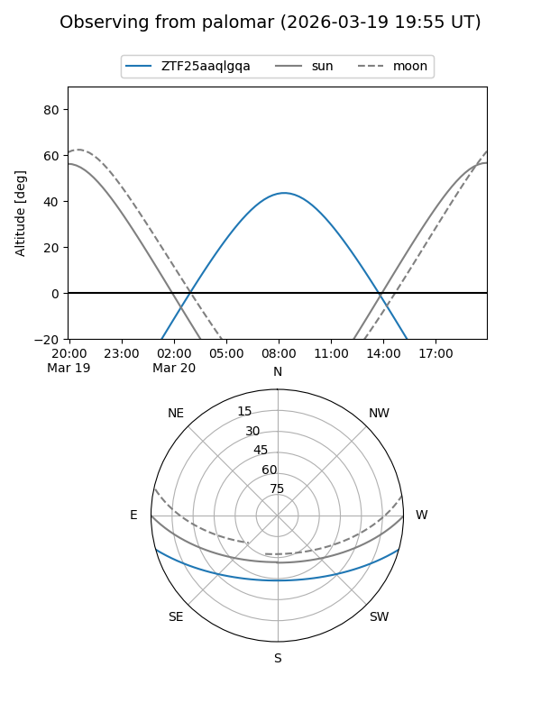

ZTF25aaqlgqa
Target ZTF25aaqlgqa at 2026-03-20 10:09
Aliases and brokers:
FINK: link
Lasair: link
ALeRCE: link
alt names
ZTF25aaqlgqa (ztf,fink_ztf)
Coordinates:
equatorial (ra, dec) = 185.5519,-12.89730
equatorial (HMS+DMS) = 12:22:12.46,-12:53:50.27
galactic (l, b) = (291.9598,+49.35072)
Flags:
Photometry:
last ztfg=16.08
1 ztfg detections
Lightcurve
Visibility


Additional plots